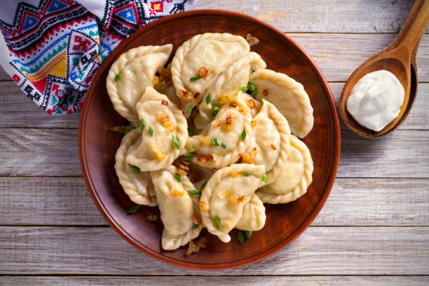

Pierogies

Description
Pierogi are filled dumplings made by wrapping unleavened dough around a
savoury or sweet filling and cooking in boiling water. They are often
pan-fried before serving.
Ingredients
- 5 cups all-purpose flour
- 1 teaspoon salt
- 1 cup water
- 3 large eggs
- 1/2 cup butter, softened
- 4 medium potatoes, peeled and cubed
- 2 medium onions, chopped
- 2 tablespoons butter
- 5 ounces cream cheese, softened
- 1/2 teaspoon salt
- 1/2 teaspoon pepper